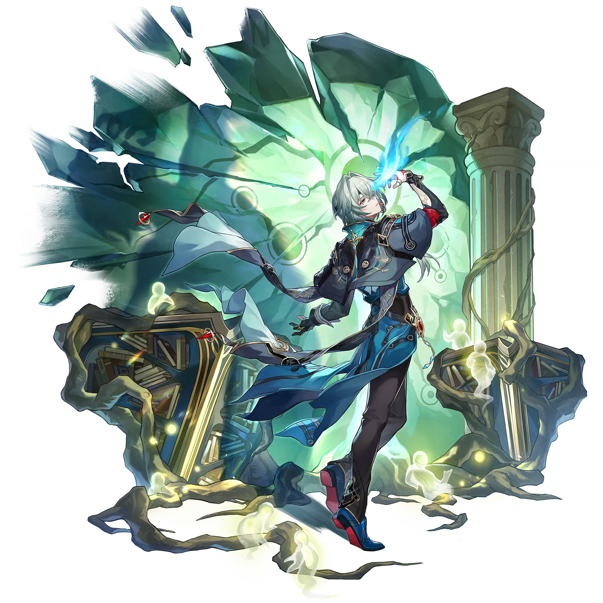

Anaxa
Best Anaxa build guide for Honkai Star Rail. See Anaxa's best Relics, Light Cones, teams, Eidolons, Trace priority, and how to play Anaxa.
🔍 Detail Skill
Semua skill aktif dan pasif beserta efeknya.
Deals Wind DMG equal to #1[i]% of Anaxa's ATK to one designated enemy.
Deals Wind DMG equal to #1[i]% of Anaxa's ATK to one designated enemy and additionally deals #2[i] instance(s) of DMG. Each instance of DMG deals Wind DMG equal to #1[i]% of Anaxa's ATK to one random enemy, prioritizing Bouncing to enemy targets that have not been hit by this instance of Skill. When used, for each attackable enemy on the field, this Skill has its DMG dealt increased by #3[i]%.
Each time Anaxa lands 1 hit on enemy targets, inflicts 1 Weakness of a random Type to the targets, lasting for #2[i] turn(s), with priority to the Weakness Type that the target doesn't already possess. While Anaxa is on the field, inflicts the "Qualitative Disclosure" state on enemy targets that have at least #3[i] different Types of Weaknesses. Anaxa deals #1[i]% increased DMG to targets afflicte
After using Technique, inflicts the Terrified state on enemies in a set area. Terrified enemies will flee in a direction away from Anaxa for #1[i] second(s). When allies enter battle via actively attacking a Terrified enemy, it will always be considered as entering battle via attacking a Weakness. After entering battle, Anaxa applies 1 Weakness of the attacker's Type to every enemy target, lasting
⚔ Light Cone Terbaik
Diurutkan dari yang paling kuat. Persentase menunjukkan performa relatif terhadap pilihan terbaik.
💎 Relic Set Terbaik
Set terbaik untuk karakter ini, diurutkan berdasarkan prioritas.
📊 Stat Utama
Stat yang dicari pada tiap slot.
👥 Tim yang Direkomendasikan
Karakter yang sering dipasangkan bersama Anaxa.
 Tribbie
Tribbie
 Sunday
Sunday
 Cerydra
Cerydra
 Dan Heng • Permansor Terrae
Dan Heng • Permansor Terrae
🔗 Lanjutkan
Build ini dirangkum dari Prydwen Institute. Starwise tidak menghitung sendiri. Angka bisa berubah setelah patch atau karakter baru rilis.